AskCody
Hybrid Office Manager
Year
2022
Time
4 weeks
Role
Research
Prototyping
User Testing
Coding

Overview
AskCody is a company specializing in efficient meeting management through digital solutions. Their philosophy is based on improving the workplace experience, thus increasing employee productivity and satisfaction. Their main product is a cloud-based, flexible and secure solution for creating and managing meetings for office spaces, therefore creating a controlled distribution of the employees. Their platform also makes it possible to edit, track and analyze the meetings. However, our client is addressing major challenge due to the change in corporate office culture.
Problem
After the COVID-19 pandemic, the concept of workplaces has changed. More and more companies are in the process of transition from static to hybrid office environments. With this transition a new problem arises. Office resource management tools are simply not suitable for the new era of hybrid transformation.
Objective
To help companies address this issue, we will investigate developing a software solution which will capitalize on utilizing all the company's resources while providing flexible work arrangements for its employees.
Design Thinking
Our choice of development method for the project was Design Thinking as it can help us systematically extract, teach, learn and apply human centric techniques to solve problems in a creative and innovative way. By using Design Thinking we will ensure that the focus is kept on the users' needs and values, and that it is a human-centered procedure.
Empathize
We prepared a thorough interview guide and carefully selected the possible participants, as it would greatly influence the result. We believed that the best source to extract information from would be from personnel of the corporate offices.
Based on the interviews, we gained insight to many unique needs, which we sorted and evaluated. From this we concluded that companies are looking to optimize their capacity of space resources and to increase the productivity of their employees by automating everyday ad-hoc tasks. In addition, complying with the hybrid model was a key factor.
Personas
Together our findings we settled on having personas for the best representation of our target audience. By doing this we'll be able to know the specific needs of workers in similar positions and use their possible motivation or pain points for our own good. We chose to bring our perception for making it role based.
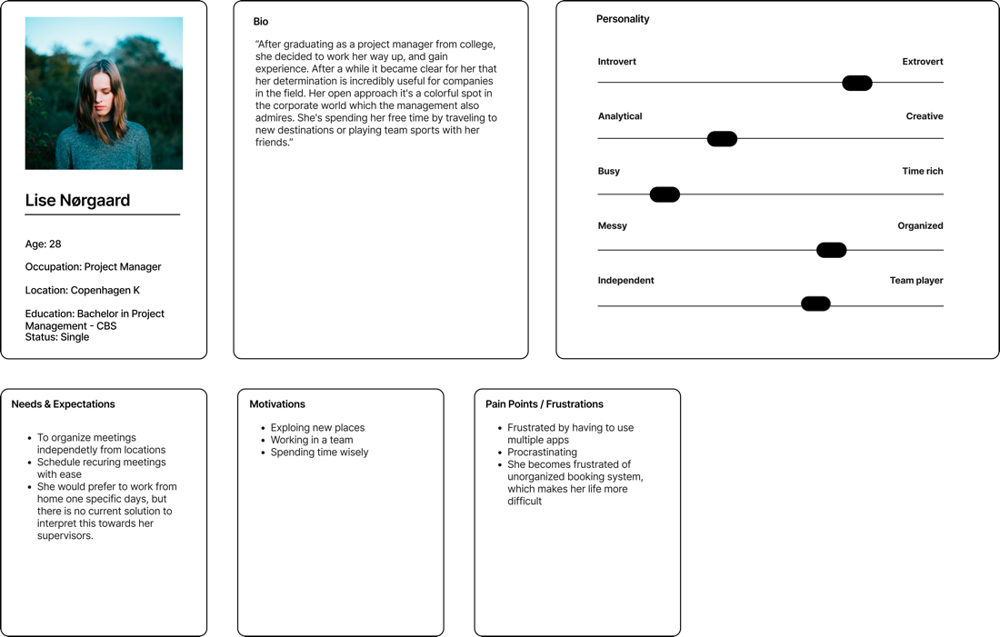 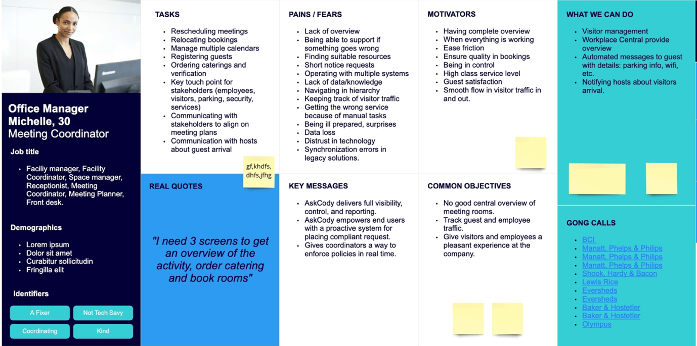Define
After finding the core issues to be solved, we analyze our observations from our users and funnel our thoughts down to make it more tangible. To do this we are synthesizing our findings so we can define the problem.
Point of View
Since our project was revolving around exploring what are the crucial issues and how they could act as an obstacle for digital-first work environment, we had to define what the exact problems are, using an actionable problem statements.
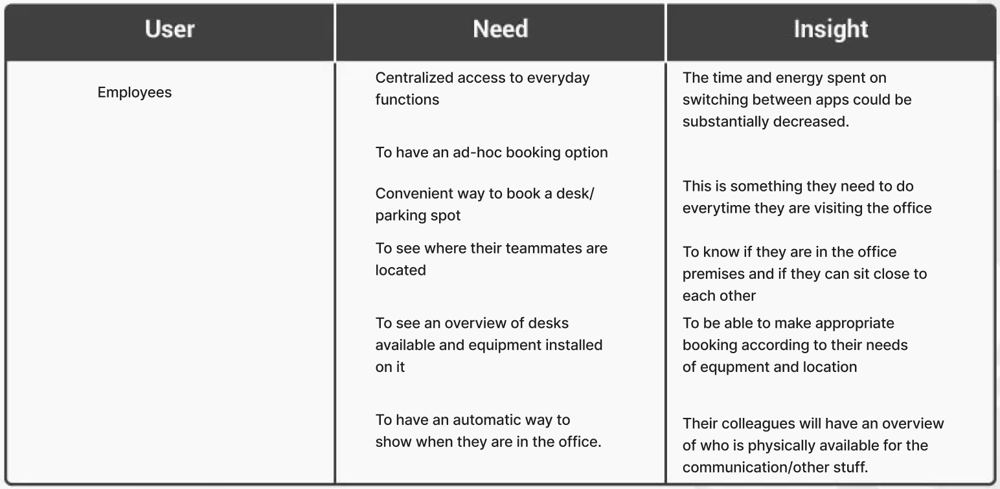 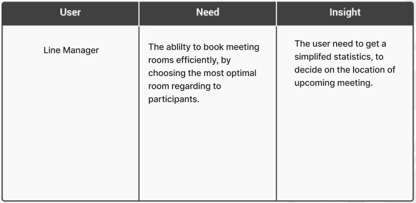Ideate
Having sufficient data made it easy for us to start ideating on the show structure for the product and with it the functionalities which will provide a solution for different user types.
First, we are stating our goal, which in our case was to discover the potential functionality of the product. To fulfill this, we developed ideas under a short, predetermined amount of time and later validated them among us.
Card Sorting
Our next step was to conduct a card sorting study. We have created cards based on our previous brainstorming sessions, where we were discussing taxonomically low-level features and other aspects of the future system.
We choose our card sorting method to be hybrid, as our end-product was focusing more on functionality, rather than pure information presentation.
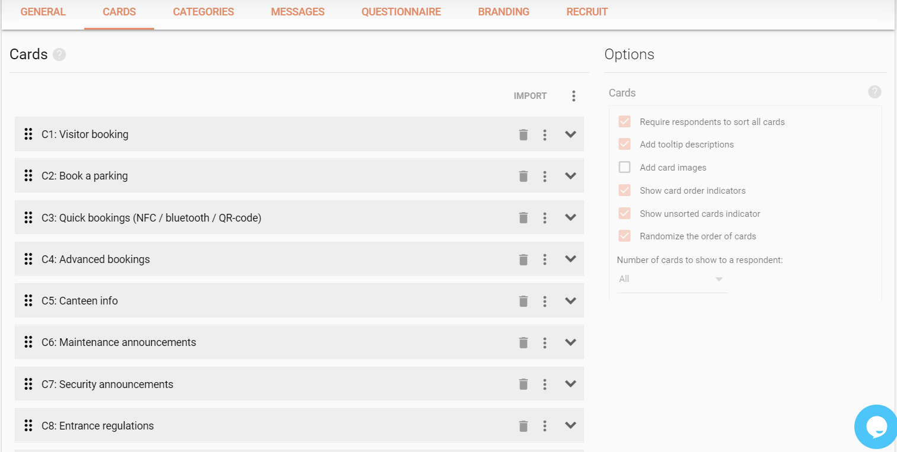
The results were captivating, which drove us to generate additional categories, which gave us a further approvement.
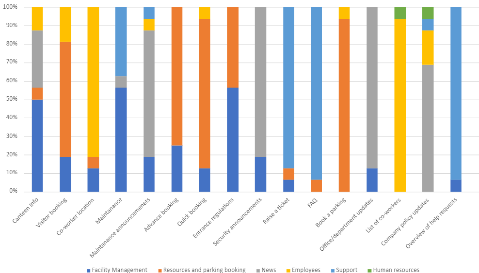
Information Architecture
We started to establish an informational architecture by creating a sitemap. Visual sitemaps gave us a clear representation of the structure for our product. To institute the taxonomy, we had made clear relations between the content, which also lay down the foundation for multiple user flows.
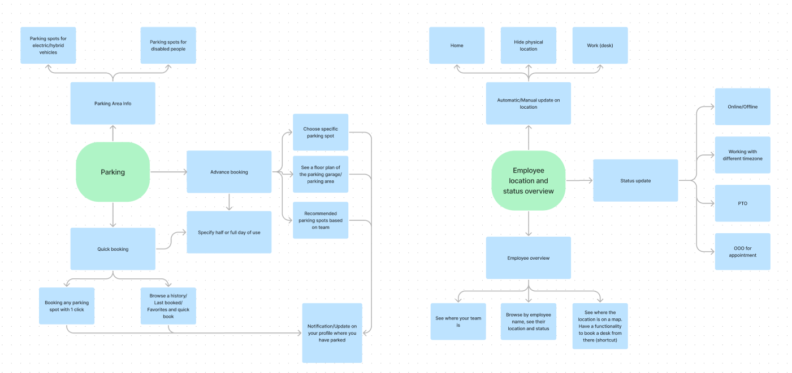 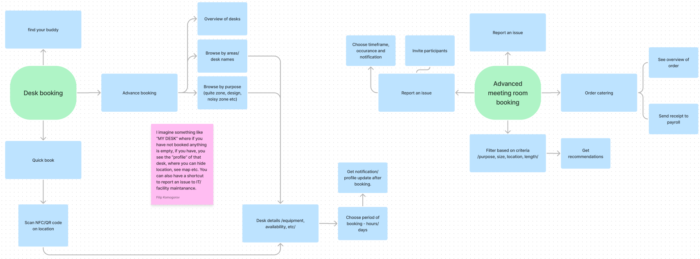
Before finalizing the IA, we created a sitemap for the most valid categories and listed their functions and dependencies beneath them, based on the study results. This was necessary as after working with many pages with many functionalities their relations became quite confusing and therefore, we visualize them.
User Stories
Before going any further we had to make a product discovery using User Stories to revise our progress and verify if all customer goals and product requirements achievable and can be met.
Our discovery was dictated by two factors, which were our project needs and the technical requirements, including the potential limitations.
We have made a list with User Stories to catch all software features from our users' perspective.
Prototype
We had started to create initial sketches to capture our vision and get an overview of the page structure. We're also able to visualize the information architecture and project the user behaviors.
Low-Fidelity Wireframes
This time we started to apply more details, including a well-defined information architecture.
Based on the assessment of the card sorting we had re-evaluated and placed the access to the most important pages into the header, ending up with five subpages.
Mid-Fidelity Prototype
Our design was determined by the Fluent UI design system while retaining the AskCody corporate visual identity.
We made a dashboard design, including a snippet of a calendar for a quick overview of the upcoming events, which is one of the most crucial assets of an office worker. In case the visitor in the project manager, we also placed a quick overview widget for the tickets submitted though the support.
We have created design assets and components respecting the Microsoft design language, Fluent, due to our platform of implementation.
In terms of colors, we had to take both Teams' and AskCody's into consideration. It was important to establish a harmony between them, while not blending them in too much.
 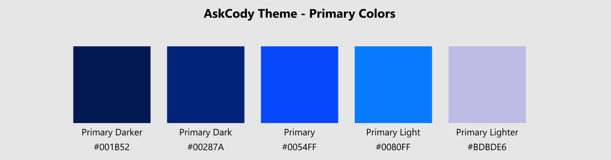
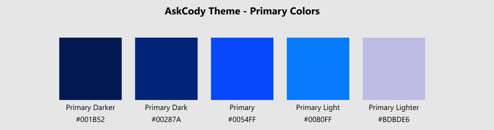
Despite them being a way to interpret the brand itself, it also helps capturing feeling, which we want to make the users feel when they are using our solution. Using it properly can improve how the users perceive and interact with the interface. AskCody's main color is a shade of blue, which is notoriously stand for calmness or serenity. This exactly captures what our goal is with our product by contributing to the establishment of a structured and orderly environment.
High-Fidelity Mockups
Our last iterations included all the functional and interactive elements, using both the design system and the custom assets.
At this point, we had planned out how the interactions should behave and what they should result in, including changes based on additional feedback.
When thinking about convenience and fast ways of booking the resources, the mobile comes as an obvious solution, unless the ad-hoc on-site version is more convenient. This is exactly the reason we have decided to create a concept of what mobile interaction could look like.
We have created a concept combining did you to land real world implication, where booking could be done using mobile devices.
We carried out a watch companion implementation of the booking system that is remarkably similar to the mobile version.
Test
We had proceeded with carrying out a series of five second tests to verify our findings.
For the first session, we took the busiest page of our prototype to see if the call-to-actions are working as intended and what grabs the user attention the most.
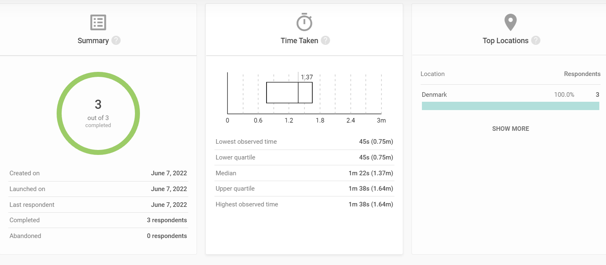 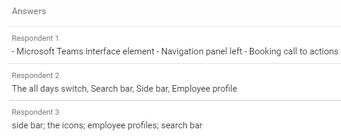
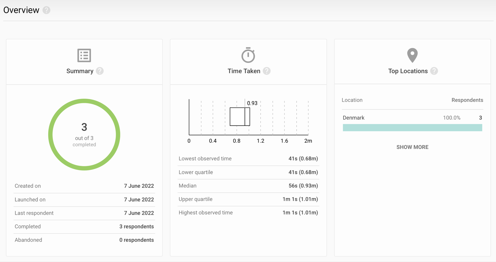
The results of our testing sessions were better than we anticipated. The key targets we were aiming for are recognized by the users in the way that we thought they would. This confirmed our solutions are validity.
Realization
The solution was carried out using HTML, CSS, JavaScript. We utilized React as Front-end framework, by having React-Bootstrap as our library. This was due to it is being Microsoft's recommended tool for building Team's applications.
React being a lightweight library, allowed us a flexible and rapid process.
Summary
To summarize, we have created an innovative concept for AskCody to solve the issue of resource management and flexible transformation in the office management area.
We had carried out a centralized solution existing part of AskCody's ecosystem integrated into Microsoft Teams to manage office resources, while providing an overview of the company both for the employees and the managers in the rising trend of hybrid work environments.